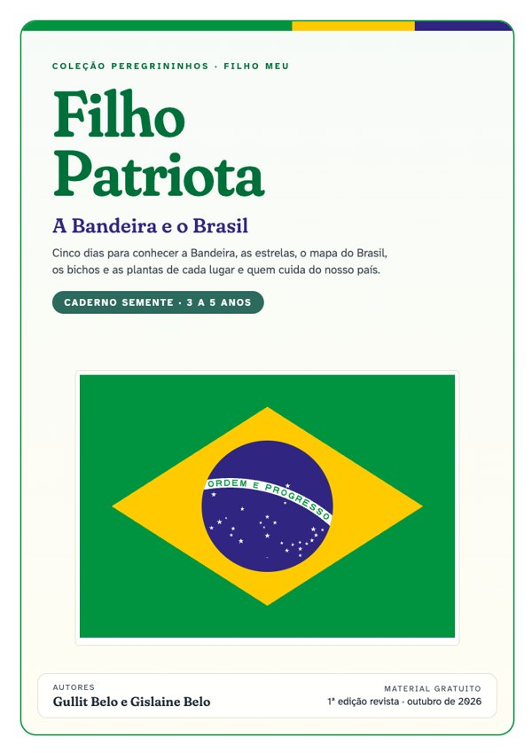
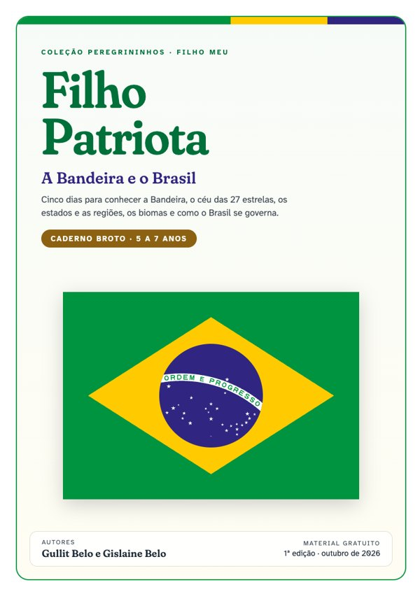
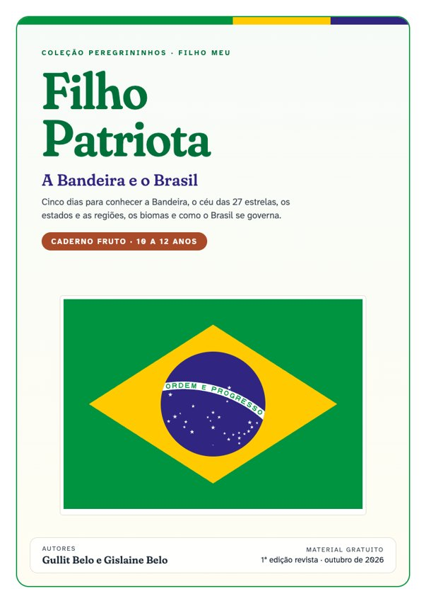

Semente
3 a 5 anos
Cores e formas da Bandeira, contar estrelas, pintar o mapa e conhecer os bichos de cada bioma.
GratuitoBaixar o Semente
A Bandeira e o Brasil, em cinco dias
Fizemos quatro cadernos para a criança conhecer a Bandeira e suas 27 estrelas, os estados, os biomas e como o Brasil se governa. Cinco dias, de 20 a 30 minutos, com conteúdo conferido nas fontes oficiais e um versículo de Provérbios por dia.
Gullit e Gislaine




Escolha pela idade, preencha nome, e-mail e WhatsApp e baixe na hora, sem custo.
PDF gratuito, para imprimir em casa em folha A4
As quatro versões seguem o mesmo roteiro, com profundidade de acordo com a idade.
Os irmãos estudam juntos o mesmo tema, cada um no seu nível.
Para os pequenos, pintar, contar e ligar. Para os maiores, tabelas, mapas e o básico da Constituição.
3 a 5 anos
Cores e formas da Bandeira, contar estrelas, pintar o mapa e conhecer os bichos de cada bioma.
5 a 7 anos
Os símbolos nacionais, as regiões, as capitais e os três Poderes em frases curtas.
7 a 9 anos
Tabelas de estados e estrelas, fronteiras, biomas e a linha do tempo dos presidentes.
10 a 12 anos
Desenho oficial da Bandeira, forma de Estado, sistema de governo e os artigos da Constituição.
Marque a idade de cada filho, preencha os dados e o link para baixar aparece na hora. Imprima e comece quando quiser.
Feito por Gullit e Gislaine Belo, autores da coleção Filho meu, com conteúdo conferido na Constituição, no IBGE e na Lei dos Símbolos Nacionais.
Toque no caderno para baixar e guarde o arquivo no seu celular ou computador.
Caderno Semente3 a 5 anosBaixar PDF Caderno Broto5 a 7 anosBaixar PDF Caderno Árvore7 a 9 anosBaixar PDF Caderno Fruto10 a 12 anosBaixar PDF Enviar para outra família pelo WhatsApp Conheça a coleção Filho meuCadernos para estudar com os filhos, um tema por vez, com a Palavra de Deus no centro.

Fizemos cada página para os filhos e para os pais que vão sentar ao lado deles. Que estes cinco dias sejam bem usados aí na sua casa.
Gullit e Gislaine · Filho meu Educacional
PDF gratuito, para imprimir em casa em folha A4